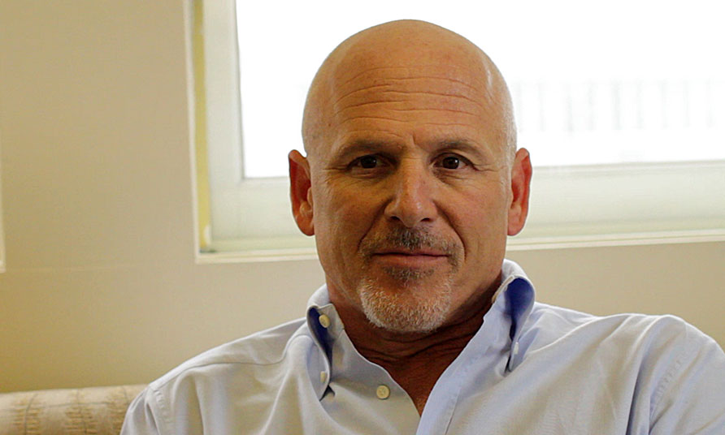
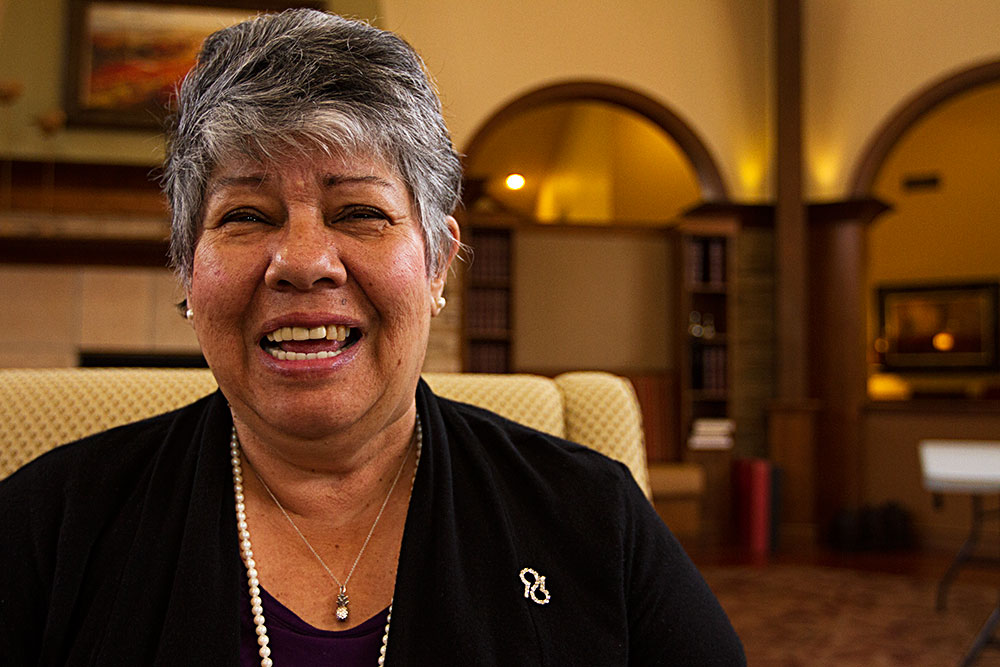

The Price of Memories
By 2050, 16 million people in the U.S. will have Alzheimer's disease. Why is federal research funding for this disease so low, and what other sources have scientists turned to for support?
Scroll down for more
The Funding Challenge
Scroll for Rae Lyn part II
Federal funding for Alzheimer’s disease lags behind money for cancer, heart disease
More than 5 million Americans suffer from Alzheimer’s disease, now the nation’s third leading cause of death.
There’s no cure or effective treatment, and with an aging baby boomer population, the future isn’t bright. By 2025, experts estimate the number of Alzheimer’s patients ages 65 and older will increase to 7.1 million.
By 2050, that number could be as high as 13.8 million.
Despite this looming public health crisis, relatively little money is being spent by the federal government, venture capitalists, pharmaceutical companies or other private funding sources to try to find a cure.
“It’s history - cancer’s been around a lot longer, the advocacy groups for AIDS were much stronger,” says Creighton Phelps, National Institutes of Health director of the Alzheimer’s Disease Centers Program national network of laboratories. “Heart disease and diabetes have been around longer.”
Experts cite several other reasons for the lack of research funding:
- The victims are the elderly, an often forgotten population warehoused in nursing homes.
- A number of high-profile drug trials failed, casting doubt on scientific progress.
- There are no survivors to testify before Congress with uplifting success stories and appeal for more funding.
Without more research money, some experts warn, the unchecked disease could cripple the nation’s healthcare system.
“This is a huge and growing problem,” says Dale Bredesen, an Alzheimer’s researcher at the Buck Institute for Research on Aging, a private lab based in Novato, Calif. “This is a potentially trillion dollar problem.”

Photo by Jeffrey Zeldman, Creative Commons
Dressed in a dark suit adorned only with a small, silver insignia of the Alzheimer’s Association, actor Seth Rogen faced a Senate subcommittee in February and called for Congress to increase funding for Alzheimer’s disease care and research. Rogen said he was moved to speak to legislators after seeing the effects of the disease first hand in his mother-in-law.
“Americans whisper the word 'Alzheimer's' because their government whispers the word 'Alzheimer's,' and although a whisper is better than silence that the Alzheimer's community has been facing for decades, it's still not enough,” Rogen said in his speech to Congress. “It needs to be yelled and screamed to the point that it finally gets the attention and the funding that it deserves and needs."
Rogen’s words are echoed by many Alzheimer’s disease researchers, philanthropists and lobbyists, who point to the discrepancy between research funding for Alzheimer’s and many other diseases.
What’s especially frustrating is that the lack of money coincides with a peak of knowledge about the disease, says William Jagust, a University of California, Berkeley professor of public health and neuroscience. He is a longtime Alzheimer’s disease researcher who works with biomarkers, measurable indicators like blood pressure or laboratory tests that can show responses to treatment.
When Jagust started in the field in the 1980s when the disease was first recognized, he says there were few theories about the cause. Now, scientists have developed a number of theories, along with successful tests on animals and biomarkers in humans to test drug efficacy.
“We’re at an amazing point in time for research,” he says.
Yet the percentage of grant applications for Alzheimer’s research being funded by the federal government has been at a historical low for the last few years, says Bredesen at the Buck Institute, who previously served on a National Institute on Aging advisory board.
Federal funding for Alzheimer’s research reached $529 million in 2010 with an infusion of additional money from the American Recovery and Reinvestment Act. Since then, money has fluctuated each year. In 2013, funding was at $504 million, and this year, it’s estimated to rebound to $566 million.
The numbers are a fraction of the research funding for other diseases.
In 2013, cancer research received 10 times as much money - $5.2 billion - the highest total for any specific disease-related research that year. It was followed by infectious diseases at $4.8 billion and HIV/AIDS at $2.9 billion. Heart disease received about $1 billion. Eye disease and other vision disorders also ranked above Alzheimer’s disease, with $774 million.
The new funding totals for this year and the next reflect a new $100 million-a-year commitment from the federal government — a recent victory for Alzheimer’s researchers and lobbyists. The $100 million was a special pool of money earmarked by Congress specifically for Alzheimer’s research. The impetus? The National Alzheimer’s Project Act.
In 2011, Congress passed and President Barack Obama signed into law the act, which authorized the creation of a national Alzheimer’s plan. The plan is overseen by the Department of Health and Human Services and recommendations for the national plan are suggested by an advisory board made up of federal officials, scientists and advocacy group representatives. The first plan was released in May 2012, and it is updated each year.
As part of the 2013 plan, the advisory council set a deadline of 2025 for a treatment or cure to be found.
“We felt it was important to put a stake in the ground and put a kind of terminus out there so there is a focal point,” says Ronald Petersen, chair of the advisory council and director of the Alzheimer’s Disease Research Center at the Mayo Clinic in Minnesota. “I think it’s quite possible that we would get a treatment that is a disease-modifying therapy on the market.”
An obstacle to reaching that goal is enrolling enough people in drug development trials. Participation often requires several visits to a research center in a major city, visits that can range from all-day to multi-day, up to once a month.
Alzheimer’s trials also require participants have a study partner — a spouse, family member, close friend or caregiver who will accompany the patient to research appointments and update researchers on the patient’s medical condition and overall health, information the patients can’t always give on their own. The frequency of visits often means study partners that are adult children have to miss work, making clinical trial participation difficult for many potential patients, says Aimee Pierce, assistant clinical professor and medical director of the UC Irvine Memory Assessment and Research Center.
“It’s hard enough to get days off to take care of a sick parent, much less clinical trials,” she said. This also means there’s a large segment of the Alzheimer’s population without a strong support structure that is underrepresented in trials, she said.
The other “major obstacle,” Petersen says, is funding.
The advisory council has suggested that $2 billion be allocated to disease research annually, nearly four times the current funding level. The money would come from the federal government as well as the private sector, meaning the pharmaceutical industry and nonprofit or advocacy organizations, as well as medical device or imaging companies. These are all sectors that rarely, if ever, work together, but Petersen is optimistic.
“I think it is getting better — the pharma companies realize there is a lot to be gained by collaborating, especially in the pre-clinical, pre-competitive space,” he said.
There’s no guarantee that Congress will act on the funding recommendations from NAPA.
But some, like Ruth Gay, director of public policy and advocacy for the Alzheimer’s Association in Northern California, think the steadily increasing number of Alzheimer’s patients and the aging baby boomer population will put pressure on lawmakers to act.
“I’ve been working with this issue for the last 10 years, and working on the policy piece of it, and I think all I see is more momentum growing around this disease ,” she says. “I think it will definitely happen, whether it will happen this year or in five years ... Alzheimer’s is in the news all the time now.”
“We're at an amazing point in time for research.”
Allocation of federal funding is a complicated matter. There are three ways for disease-based research to get federal dollars.
- In the federal budget, Congress can direct funds to a certain disease, a mechanism often used to quickly support research for recently discovered diseases, says Robin Barr, director of extramural activities at the NIA. This measure resulted in the rapid growth of funding for HIV/AIDS research in the ‘90s. In the 2014 federal budget, this was the $100 million allocated specifically for Alzheimer’s research — no other disease received an increase in this budget session.
- Funding from Congress can also be allocated more broadly to the various institutes within the NIH, like the National Institute on Aging, the National Institute of Mental Health, the National Cancer Institute and the National Heart, Lung and Blood Institute.
But institute funding is usually based on the previous year’s level, meaning that allocations generally stay the same from year to year, Barr says. Longevity also matters, as older institutes like the National Cancer Institute build up large budgets over time, compared to the younger NIA, where almost all Alzheimer’s research is funded.
There’s been talk of establishing a specific institute for Alzheimer’s disease. Public support for combating a specific illness can raise a disease to institute status, like the elevation of cancer and heart disease, Barr says. But the NIH is not yet convinced, says Creighton Phelps, director of the NIA’s Alzheimer’s Disease Centers Program, who has been involved in Alzheimer’s research funding and oversight for more than 30 years. The NIA has been the primary institute for Alzheimer’s disease research since the 1980s, Phelps says.
- The third way is shifting funding allocations within an institute. The director of each institute determines how much money is distributed: in the NIA’s case, Alzheimer’s research competes with areas like retirement planning and the effect of aging on the risk for heart disease, cancer and diabetes, Barr says.
The overall challenge is that Alzheimer’s research funding draws on the same general pot of federal discretionary money that’s used to pay for many other deserving programs.
“It has to come from somewhere, like education or food stamps or something in the discretionary pool of money,” Phelps said. “Are you going to say ‘education is not important, fund us instead?’ Everything is complicated, it’s a lot of factors.”
Yet in laboratories across the nation, researchers like Rudy Tanzi, a neurology professor at Harvard Medical School who helped draft a national plan to fight Alzheimer’s disease, say their work is impeded by funding constraints.
“The only limit to Alzheimer’s progress is money,” he said.
Also challenging will be getting pharmaceutical companies to pitch in.
Drug trial failures discourage pharmaceutical investment
Spring and summer of 2013 were tough for Alzheimer’s researchers, as each month another pharmaceutical company reported a setback in drug trials.
Eli Lilly. Baxter International. Johnson & Johnson.
After these high profile failures, several pharmaceutical companies either scaled back their Alzheimer’s research and development or stopped it all together .
“I think we have to do a lot more basic science work to understand what’s going on,” Chris Viehbacher, CEO of Sanofi pharmaceuticals, said in an interview with Bloomberg News about the company’s divestment in April 2013. “We really, at best, partially understand the cause of the disease. It’s hard to come up with meaningful targets.”
The bad news was particularly disappointing for researchers because there had been increasing optimism that the clinical trials would yield a breakthrough.
“Some newer compounds have made it out of Phase 2 and into Phase 3 trials, some have been in much larger, later Stage 3 trials, so I think that’s boosted optimism,” says Brad Williams, University of Southern California pr ofessor of clinical pharmacy and clinical gerontology. “But I also think that ultimately just increased the level of disappointment. I tell my students when I hear something on the news, I think, ‘Well that’s the next great disappointment.’”
“Historically, we have hit this wall, and there has not been a way to break through it at this point,” he says.
Pharmaceutical companies generally get involved in the later stages of research, when a promising chemical compound from a research lab is ready to be tested as a commercial drug candidate.
At the point clinical trials are reached, funding changes from federal millions to industry billions.
An effective drug could be worth tens of billions of dollars on the market. But thus far, the pharmaceutical industry only has lost billions of dollars on failed drug trials.
“It’s seen as so risky and so expensive … so much more expensive than other diseases,” says Diana Shineman, scientific director of the Alzheimer’s Drug Discovery Foundation, a venture philanthropy that funds research and has partnered with pharmaceutical companies in the past.
Drug trials for central nervous system diseases like Alzheimer’s take many months or even years to complete because of the time needed to monitor patients’ reactions to drugs affecting the brain, says Allen Roses, a professor of neurology at Duke University who researches Alzheimer’s disease and was head of research and development at GlaxoSmithKline pharmaceutical company. That makes Alzheimer’s clinical trials more expensive than cancer trials, Roses says.
“They keep hitting dead ends.”
There are currently only four drugs approved for treatment of Alzheimer’s disease. All of these medications (Aricept, Exelon, Razadyne and Namenda) may provide only temporary treatment of symptoms. Two of them, Aricept and Exelon, were developed based on hypotheses from the 1980s. The most recent drug, Namenda, was approved about a decade ago, Williams says.
The gap in more current treatment options isn’t from lack of trying. According to data from the Pharmaceutical Research and Manufacturers of America, an organization that represents pharmaceutical companies, there were 101 failed Alzheimer’s drug trials between 1998 and 2011. There are 73 new treatments and diagnostic methods currently in trials.
“We remain very optimistic about our Alzheimer’s disease R&D program,” Eli Lilly spokeswoman Stefanie Prodouz, said in an email. “Lilly’s innovative research and development approaches and expertise in Alzheimer’s disease have resulted in a strong Alzheimer’s disease pipeline representing multiple research and development approaches encompassing both therapeutics and diagnostics.”
Shineman says pharmaceutical companies in the future will likely want more data about specific causes of the disease from Alzheimer’s researchers and the potential for the drugs to hit those targets before they reinvest.
“Drug companies have a fiduciary responsibility to their stockholders to bring in more money than they spend,” Williams says. “They keep hitting dead ends, and it is such a complex disorder that a broad initiative is certainly required to be able to get anywhere with this because we still don’t really know … the true root cause or causes.”
One such initiative was announced in February — a private-public partnership between 10 pharmaceutical companies and the NIH that has reignited research opportunities. The five-year, $230 million collaboration, known as the Accelerating Medicines Partnership, will combine the expertise of the normally competitive drug companies to find potential biological targets for drugs for diabetes, rheumatoid arthritis, lupus and Alzheimer’s disease.
Three new trials of prevention drugs involving both research labs and pharmaceutical companies have also bolstered optimism. These multimillion-dollar studies received funding from the NIH, the Alzheimer’s Association advocacy organization, and pharmaceutical companies Genentech, Roche and Eli Lilly.
This kind of public-private partnership gives research organizations the chance to work with pharmaceutical companies and their drugs in an early research setting, says Virginia Buckles, executive director of the Alzheimer’s Disease Research Center at Washington University in St. Louis. Washington University is the sponsor and coordinating center for one of these drug studies. At the same time, pharmaceutical companies get access to study participants, which could accelerate drug trials.
Several researchers pointed to the Alzheimer’s Disease Neuroimaging Initiative (ADNI) based in San Francisco as an early example of a successful private-public partnership.
The nine-year initiative focusing on early diagnosis of the disease was the brainchild of Michael Weiner, a University of California, San Francisco researcher. After consulting with the NIA, Weiner was able to secure NIH support as well as partnerships with pharmaceutical companies and the Alzheimer’s Association.
Today, ADNI is the largest private-public partnership on brain imaging and has provided the data for hundreds of scientific papers and other research efforts, Weiner said in an email. The initiative has sites throughout the United States.
Another triage approach to the decreasing federal funds is what is called venture philanthropy.
Venture philanthropy as a temporary relief
Uncertain and sparse government funding has pushed some Alzheimer’s researchers to look to private benefactors for support.
The practice is called venture philanthropy because the benefactors often adhere to venture capital philosophies when choosing scientists and helping develop companies to market a drug. Sometimes, they’re even given a stake in the company if the researcher finds a successful treatment option. This arrangement is not specific to Alzheimer’s research — scientists studying cystic fibrosis and Huntington’s disease have also embraced venture philanthropy as a way to circumvent diminishing grant opportunities.
“Where you see this sort of approach is in situations where there is no good treatment,” said Dale Bredesen, an Alzheimer’s disease researcher at the Novato, Calif.-based Buck Institute for Research on Aging.
While venture capitalists often want a relatively quick turn-around time from research to profitable product, venture philanthropists have accepted the longer wait time.
“The time it takes to develop a drug from a promising compound is five, six, seven, even 10 years and costs right now about $1 billion,” said Tim Armour, president and CEO of the Cure Alzheimer’s Fund, a venture philanthropy in the Boston area worth $7 million. “Our payoff is a good effective drug, not a financial return.”
All three venture philanthropies interviewed for this story have similar roots — a personal connection to the disease. For the Cure Alzheimer’s Fund, it was one of the founder’s wives. For the Alzheimer’s Drug Discovery Foundation, it was the founders’ mother, famed cosmetic businesswoman Estee Lauder. For the Rosenberg Alzheimer’s Project, it was the founder’s father, stepmother and stepfather.
“I always say if you see the impact of the disease once, that’s usually enough,” says Douglas Rosenberg, founder of the Rosenberg Alzheimer’s Project. “If you see it twice, it can be overwhelming, and if you see it a third time, you probably begin to understand the passion I have for it.”

Douglas Rosenberg's family history of the disease spurred him to create a venture philanthropy specifically for Alzheimer's research.
Venture philanthropy funding can be provided at multiple stages of the research cycle.
It can come in the early days of research to generate preliminary data, which is necessary to be considered for later NIH grants.
Other venture philanthropies, like Rosenberg’s organization, and the New York-based Alzheimer’s Drug Discovery Foundation, focus on the drug discovery phase - the transition between academic research and the pharmaceutical development of a drug.
The Alzheimer’s Drug Discovery Foundation, worth $4 million, molded its priorities to current needs. It moved away from funding studies on the biology of the brain after pharmaceutical companies began subsidizing that kind of research, and instead focused on the gap between academic research and drug production, says Diana Shineman, director for scientific affairs at the Alzheimer’s Drug Discovery Foundation.
This gap in the drug development process is known by many in the field as “the valley of death.” It’s at a stage that’s too early for a pharmaceutical company to get interested in the work and take over funding responsibilities, making it difficult to pay for this middle section of research progress, Bredesen said.
The Cure Alzheimer’s Fund backs 15-20 research projects each year with a total of approximately $4.5 million of funding, Armour said. These studies are mostly located at the front-end of the drug development process, meaning the early stages of research.
The later stages of drug development, namely Phase 2 and Phase 3 trials, are vastly more expensive.
A Phase 1 drug trial Rosenberg supported cost about $2.5 million. When the drug advanced to Phase 2, the cost skyrocketed to more than $9 million, he said.
One of the Cure Alzheimer’s Fund’s most prominent scientists is Rudy Tanzi, a neurology professor at Harvard Medical School. Armour says his philanthropy fund’s founders sought out Tanzi for his expertise in genetics, an area of scientific research they thought would be increasingly important to an understanding of the disease. Genetics, specifically for Alzheimer’s disease, is expensive to study because the genomics of the illness are not yet well understood.
Bredesen, too, is backed by a venture philanthropist — Rosenberg, a former San Francisco real estate developer. The scientist and the benefactor met several years ago when Rosenberg attended a lecture Bredesen gave on his research. After hearing Bredesen speak, Rosenberg wanted to talk about what it would take to find new approaches to Alzheimer’s treatment.
“His take on the disease is entirely different than the mainstream dogma around it,” Rosenberg says.
Bredesen’s theory of the disease is that it’s a systems problem, rather than a specific brain protein problem. He says he thinks it will take a “cocktail” of five to 15 drugs, much like the treatment for HIV/AIDS, to stop or slow disease progression.
Bredesen declined to disclose the amount he receives from Rosenberg for his research, but says the philanthropist has been with him “every step of the way.” In fact, Bredesen predicts that venture philanthropy will be the new norm in the Alzheimer’s field and that finding a benefactor is one of the best approaches to fund research.
“Our payoff is a good effective drug, not a financial return.”
“With a lesser and lesser role for NIH, it’s going to take a greater and greater role with philanthropic individuals and venture capital and philanthropy,” he says.
But some venture philanthropists aren’t as convinced that private funding can or will eclipse that of the federal government.
“I don’t think it will ever replace the federal government,” Armour says. “What venture philanthropy can do is provide fast ... funding for research. What the federal government can provide is scale. If they want to, they can put billions behind something. We can’t do that, we never will.”
“Foundations can’t do this on their own,” Shineman agrees. “We need the government, and we need more funding for Alzheimer’s disease. I think we have a lot of ideas as a field, and when the right infrastructure and funding is in place, we can really move.”
But Tanzi says venture philanthropy is at least keeping some research projects like his moving forward.
“It’s going to be a while before we have good federal funding,” he says. “In the meantime, you have to see the writing on the wall, and you have to do what you have to do to keep going.”
Discouraged by numerous failures, venture capital won’t invest in Alzheimer’s drugs
Venture capital money has been a fairly common way to push promising chemical compounds to the drug market.
While this has been a successful strategy to develop drugs for cancer or depression, venture capitalists aren’t sold on Alzheimer’s disease research.
“What it comes down to — and this is true for all venture capital — if a field is interesting, the market is there,” says David Charron, UC Berkeley professor at the Haas School of Business and a venture capitalist in the biotech industry. “But if it’s confused, it’s hard to figure out. The only way you’re going to get involved is if there’s real clarity.”
Charron says the science behind Alzheimer’s drug compounds isn’t sound enough to give investors confidence in its success - a sentiment echoed by others.
“It’s been a tough area where people thought they had a great approach, but it didn’t play out in clinical studies,” says Dan Janney, managing director of Alta Partners, a life science venture capital company that funded some companies for Alzheimer’s research over the years. “I’m not overly optimistic with venture funding with Alzheimer’s.”
According to data from the National Venture Capital Association, 57 companies with the term “Alzheimer’s disease” in their business description have been funded by venture capital firms over the last five years. In comparison, 2,928 deals in general biotechnology have been made over the same time period.
Charron and Janney say they don’t know of any venture capitalists focused specifically on Alzheimer’s disease research — only general neurology or neuroscience.
Traditionally, venture capitalists will fund research that has an established chemical compound ready for further drug development, which places VC involvement after the academic laboratory phase and before pharmaceutical interest.
From the investor point of view, Alzheimer’s drug compounds are especially risky since there have been few successes in clinical trials of previous drugs.
“You’re talking about spending $2-3 million dollars which is likely to fail.”
“Alzheimer’s is so long-term that you would have to invest enormous amounts of research to get a preliminary sign [of efficacy],” says Leslie Holsinger, vice president of biology at Virobay, Inc., a biotech startup that does some tangential work on Alzheimer’s disease. “You’re talking about spending $2-3 million dollars which is likely to fail.”
Holsinger’s company received funding from Janney’s Alta Partners, though not for their Alzheimer’s work. While working on other projects, Virobay scientists discovered a possible biological target for Alzheimer’s drugs. Since the company’s finances are limited and don’t include money for Alzheimer’s research, Holsinger says she plans to apply for help from the Alzheimer’s Drug Discovery Foundation, a venture philanthropy based in New York.
Dale Bredesen, an Alzheimer’s researcher at the Novato, Calif.-based Buck Institute for Research on Aging who is supported by venture philanthropy, says the VC reluctance to fund Alzheimer’s is pretty straightforward:
“For a venture capitalist, there’s only one goal and that’s money,” he says. “You’re only going to put money into something that’s going to bring you more money.”
The difficulties of getting funding — both federal and VC investments — has pushed some researchers away from Alzheimer’s work.
Judith Kelleher-Andersson is president and chief scientific officer of Neuronascent, Inc., a small Maryland biotech company that focuses on research for neurodegenerative diseases. When she first started her company, she was interested in Alzheimer’s research, and got some initial funding for her work from individual angel investors, the State of Maryland, federal grants, friends and family.
Over time, the money for Alzheimer’s research dried up. Her research turned to depression therapies. Now, she’s focused mostly on Down syndrome.
“In biotech, you have to go wherever the money takes you,” she says.
If a company did create an effective Alzheimer’s treatment, the payout could be incredible.
“It’d be a $30 billion drug,” Janney says.
“VCs interested in Alzheimer’s are keeping a pulse on it,” Charron says. “Some are science individuals and dive into the science when it appears in a publication, and others are interested in different mechanisms of following that marketplace, but they’re all keeping fingers on the pulse.”
But to get there, venture capitalists say there need to be more scientific breakthroughs.
“We’re looking for really bulletproof decisions,” Janney says.

Alzheimer’s Association provides research funding, advocacy
There's nothing that immediately stands out about Cynthia Guzman, and that's the way she likes it.
The 65-year-old retiree in Napa, Calif. has a contented life with her bocce ball games, strolls around her retirement community and catching up with her neighbors.
She just happens to have early-onset Alzheimer's.
“I’ve been told there’s nothing they can do for me,” she says conversationally, her crystal Alzheimer’s Association insignia pin sparkling in the sunlight. “I don't think about it all the time — that isn't who I am today."
Guzman was diagnosed with dementia two years ago, on her 63rd birthday, after several harrowing driving incidents in which she forgot where she was and how she got there.
During a recent trip to the hospital, she said six different staff members were surprised she had the disease, saying that she didn't look like she had Alzheimer's.
Her response — "What is it supposed to look like?"
Guzman's sense of humor, friendliness and especially her acceptance of the disease has transformed the longtime nurse into a speaker and advocate for the Alzheimer's Association and a frequent visitor to both state and national lawmakers on behalf of Alzheimer's patients.

Cynthia Guzman, 65, transitioned from a career in nursing to a leading role as an Alzheimer's advocate after she was diagnosed with the disease.
She also meets with groups of Alzheimer's patients and encourages them to volunteer for clinical trials and speak out about their condition and the need for both more federal funding for research.
"People listen, but you've got to talk," Guzman says.
Guzman's dual message of both political advocacy and raising money for research is where many nonprofit organizations found their place in the world of Alzheimer's research.
In the landscape of nonprofit/advocacy groups dedicated to Alzheimer’s disease, the Alzheimer’s Association looms large. The organization is the largest nonprofit funder of Alzheimer’s science, providing more than $300 million to thousands of research proposals since it began in 1982, according to the organization’s annual reports. Of all recorded public and private funding sources for Alzheimer’s research, the Alzheimer’s Association has ranked in the top five since 2008, surpassed only by large federal agencies like the National Institutes of Health and the affiliated National Institute on Aging.
BAR CHART DATA VIZ SHOWING THE RANKING OF FEDERAL AGENCIES AND ALZHEIMERS ASSOCIATION.
When federal grants are hard to get, nonprofit organizations can provide initial funding for research. In some cases, the Alzheimer’s Association has also supported large-scale drug trials, like its current subsidizing of three prominent trials in the Alzheimer’s field. Unlike past studies, these three trials focus on secondary prevention of the disease so symptoms never develop.
The breadth of the association’s funding was evident just in the reporting for this story. Of the 16 researchers interviewed, eight received grants from the Alzheimer’s Association. Gil Rabinovici, a University of California, San Francisco researcher who studies neuroimaging of Alzheimer’s patients, received a new investigator’s grant from the organization early in his career. He received $100,000 over two years, and eventually applied for and received a larger Alzheimer’s Association grant, as well as an NIA grant.
“Those [Alzheimer’s Association] grants will sometimes fund a little riskier projects,” Rabinovici says. “The NIH tends to be more conservative with what they fund.”
The Alzheimer’s Association’s funding comes from a medley of individual donors, corporations, foundations and government agencies, according to an email statement from the organization. In 2013, the organization’s Walk to End Alzheimer’s — the world’s largest fundraising event for the disease — collected more than $57 million, placing it in this year’s top 10 of nonprofit team fundraising events.
While this figure alone equals about 10 percent of the federal budget for Alzheimer’s research, it pales in comparison to the No. 1 team fundraising event in the nation — the American Cancer Society’s Relay for Life, which raised $380 million.
“We’re working so hard to try to fundraise as much as we can, and we’re getting stronger and better every day, but it’s really daunting to know how far there is to go,” says Laura Lucas, event development specialist at the Northern California and Northern Nevada chapter of the Alzheimer’s Association. “I think without the government’s help, there’s only so much we can do.”
Many researchers say the relative lack of funding stems from the difficulties in lobbying for Alzheimer’s disease victims.
Compared to cancer fundraising organizations, which can bring survivors of all ages to speak about the impact of research dollars on their treatment, Alzheimer’s groups usually only brought family members and caregivers, who could talk about the experience second-hand.
“Without the government’s help, there’s only so much we can do.”
That’s changing now, with more early-onset patients speaking out, like Guzman. On an afternoon in April, she was preparing for her second trip to Washington, D.C., to speak with lawmakers about the importance of Alzheimer’s funding. She already had an idea of what she’d say.
“This time, it’s a thank you because they gave us more money than before,” she said, referring to the $100 million-a-year promise Congress made and fulfilled for Alzheimer’s research this year. “But I always say, ‘Don’t forget us.’”
The most successful advocacy, according to Creighton Phelps, NIH director of the Alzheimer’s Disease Research Centers national network and former senior vice president of the Alzheimer’s Association, is the kind where patients can speak for themselves.
But in the case of Alzheimer’s disease lobbying, patients’ words may not be enough.
“When you show old people, unfortunately a lot of people don’t care,” says Rudy Tanzi, a Harvard Medical School professor and Alzheimer’s researcher who helped draft a national plan to fight Alzheimer’s disease. “What people don’t think about is that in the beginning, senility is frustrating for the patients, and depressing, but for most of the disease, most of the burden is on the family, the caregivers and the healthcare system.”
Alzheimer’s policy advocates, like Ruth Gay of the Alzheimer’s Association’s Northern California and Northern Nevada chapter, have tried to broaden their presentations to show the impact of the disease beyond its immediate sufferers. Instead of just telling personal stories, Gay says she’s showing data on the cost to t he healthcare system and to businesses, since family members will sometimes miss work or even quit jobs to care for a sick parent.
In 2013, these unpaid caregivers provided more than 17 billion hours of care for Alzheimer’s patients, a number valued at $220.2 billion, according to the latest Alzheimer’s Association Facts and Figures report. The costs to businesses, which lose work time from caregivers, are in the billions, Gay says.
“We need the billions of dollars that cancer and AIDS and heart disease get,” Tanzi says. “We’re a bigger problem now, but they don’t see it.”
It’s a problem that Guzman is trying to fight, even though she knows her time is limited.
“It’s for the next generation that I need to do things for,” she says. “I don’t have any fear. I’m not scared of it.”
The future
Three highly touted prevention studies may hold the key to understanding the genetics behind the Alzheimer’s disease or the process for early detection. All three are partnerships between research institutions, the federal government, pharmaceutical companies and nonprofit organizations.
Dominantly Inherited Alzheimer’s Network Trials Unit (DIAN-TU)
Time is a huge factor in the cost of Alzheimer’s clinical trials, since it often takes many months or even years to treat participants and measure their reaction to the test drug. When dealing with “prevention” trials for a disease that may take 10-20 years to develop symptoms, the potential costs would make such trials impossible. The two-year, two drug DIAN-TU study aims to cut down the amount of time often required for clinical trials by testing two drugs against each other and a placebo — a move that’s almost unheard of with industry trials — in a specific group of individuals. The dual test allows for quicker verification of a drug’s efficacy or failure. Both drugs target the sticky brain protein, beta-amyloid.
The trial focuses on individuals who may have a genetic mutation that leads to Alzheimer’s disease because they have a parent or sibling who carries the mutation. It is known that those who carry a mutation will almost certainly develop the disease and roughly “when” they will develop symptoms (about the same age as their parent who had the mutation, usually around age 45).
The trial is headed by Randall Bateman at Washington University in St. Louis.
- Trial is supported by Washington University in St. Louis, the National Institute on Aging, Eli Lilly, Hoffmann-La Roche, the Alzheimer’s Association and Avid Radiopharmaceuticals
“This unique trial design in this unique group provides perhaps the best chance to find an effective treatment for Alzheimer’s in the next 10 years” - Virginia Buckles, executive director of the Alzheimer’s Disease Research Center at Washington University in St. Louis, and a collaborator on the DIAN-TU.
Alzheimer’s Prevention Initiative (API)
The struggles of a family in Colombia may hold the key to helping hundreds of thousands of Alzheimer’s patients — at least, that’s the bet researchers are making.
“For the first time in years, I am cautiously optimistic.”
The study, known as the Alzheimer’s Prevention Initiative, focuses on 300 people with normal cognitive functions who are from an extended family with a history of early-onset Alzheimer’s disease. The $100 million drug trial is headed by the Banner Alzheimer’s Institute in Phoenix, AZ, a research institution that is part of the largest nonprofit, non faith-based hospital system in the nation. Researchers say they hope the trial will indicate whether this drug can prevent the development of Alzheimer’s in these individuals who are almost certain to get the disease, a sign that the drug could be effective.
- Trial is supported by the National Institutes of Health, Genentech (which provided the drug used in the trial), Alzheimer’s Association
“For the first time in years, I am cautiously optimistic. There’s no guarantees, but there’s certainly hope.” - Jessica Langbaum, associate director of API, principal scientist at the Banner Alzheimer’s Institute.
Anti-amyloid treatment in Asymptomatic Alzheimer’s Disease (A4) - headed by Harvard University
Amyloid brain plaques are a hallmark of Alzheimer’s disease, but are often discovered only after irreversible damage has occurred to the mind. The purpose of the A4 study is to test an anti-amyloid drug in individuals who don’t have any symptoms of the disease, but whose brain scans show accumulation of amyloid. This drug failed previous clinical trials, but researchers believe the drug was used too late in the disease progression to change anything. The trial targets the more common form of Alzheimer’s disease, the sporadic type that most individuals develop after age 65.
The goal is to determine whether clearing the plaques before symptoms develop is a way to treat or prevent the disease before too much damage occurs. The trial costs over $100 million and is spearheaded by Reisa Sperling at Harvard Medical School.
- Trial is supported by the NIA, Harvard Medical School, Eli Lilly, the Alzheimer’s Disease Cooperative Study based at the University of California, San Diego, and the Alzheimer’s Association.
“We could not have done the A4 study without that federal funding that made companies pay attention, that made the FDA pay attention...We need to get more funding overall for Alzheimer’s disease in particular.” - Reisa Sperling, principal investigator for A4, professor of neurology at Harvard Medical School